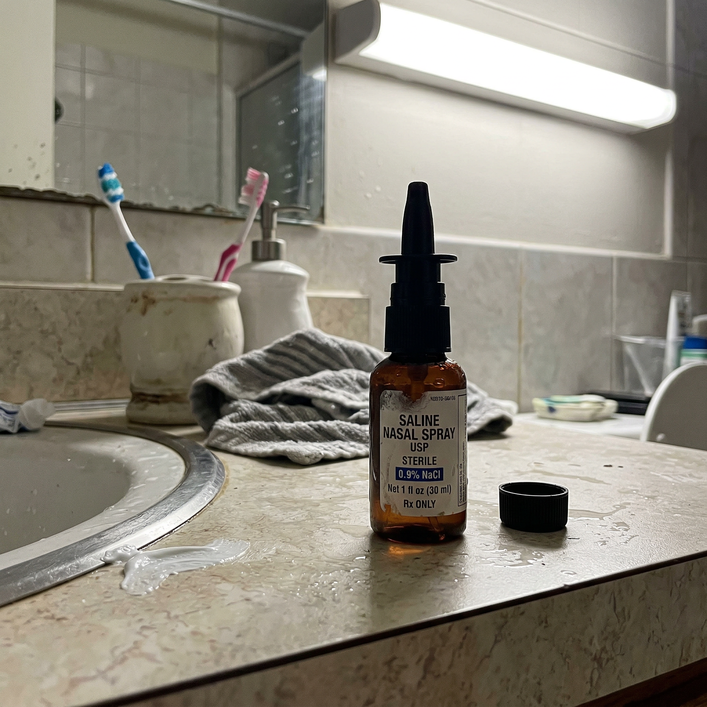
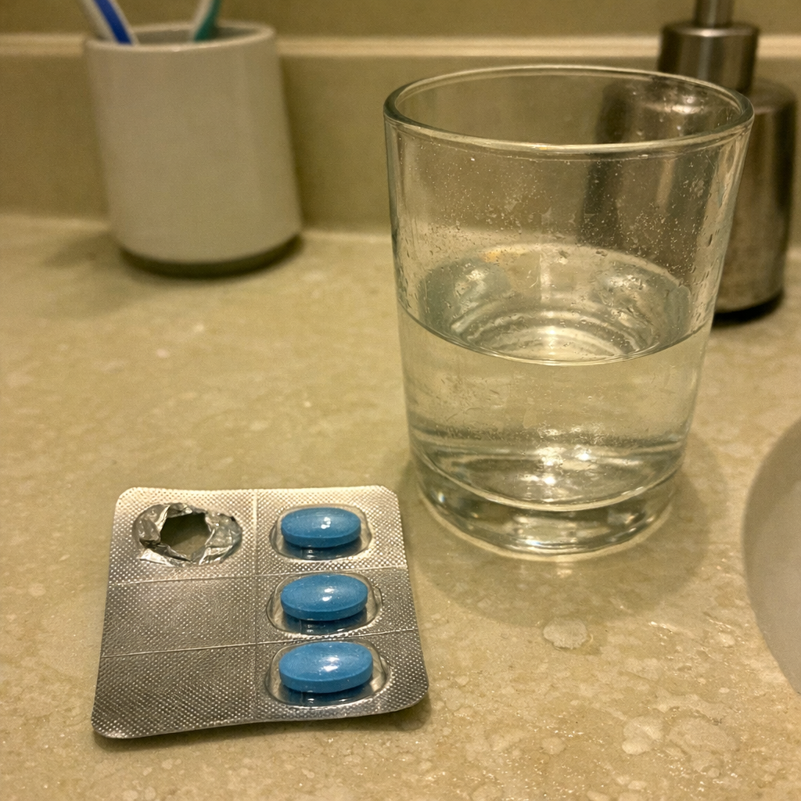
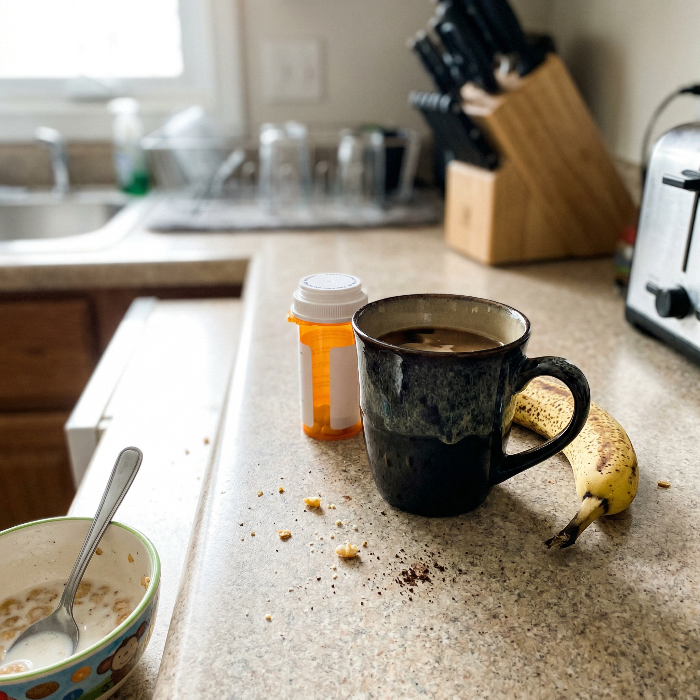
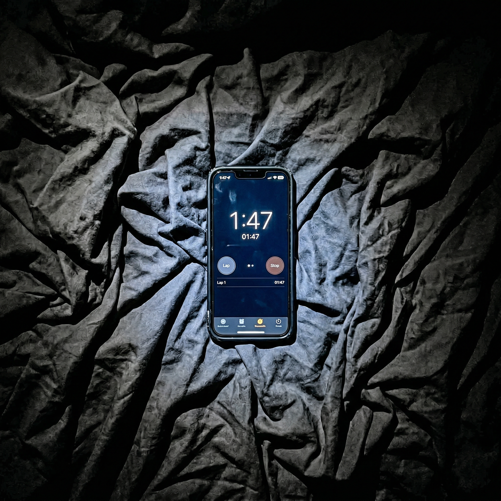
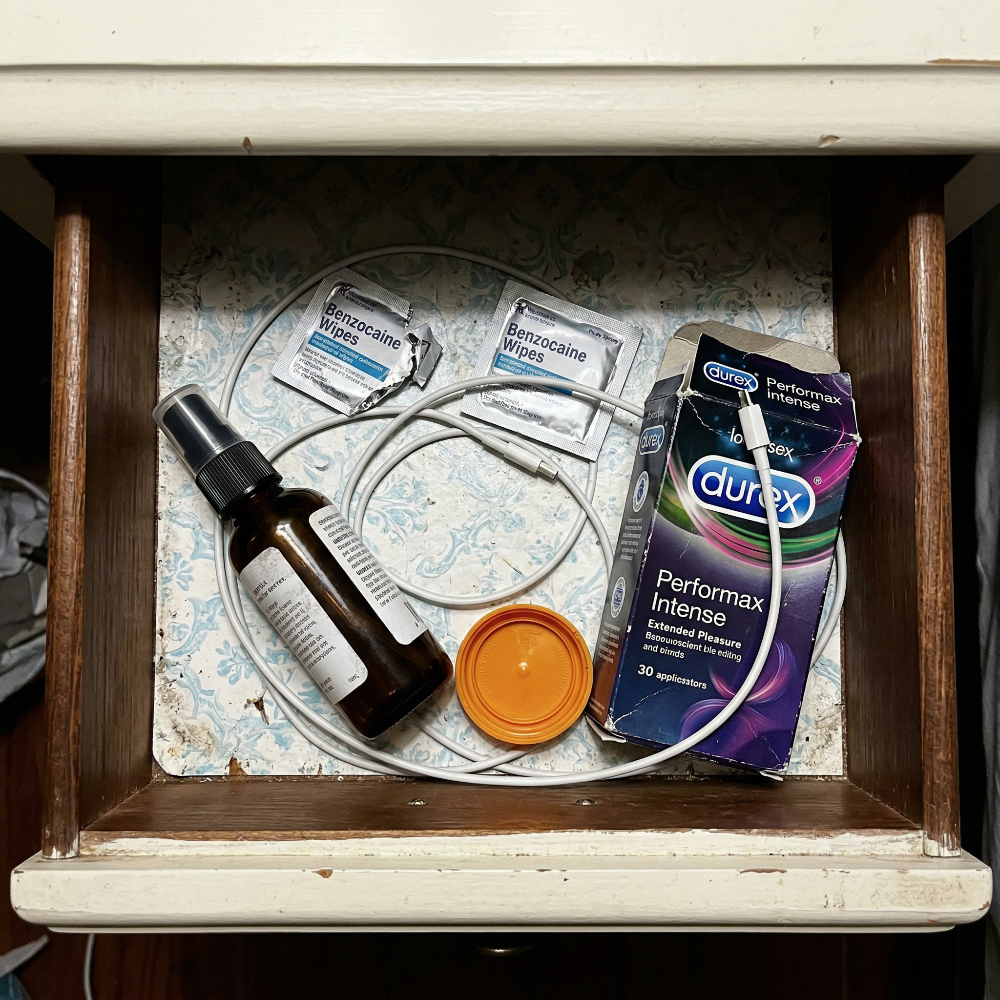
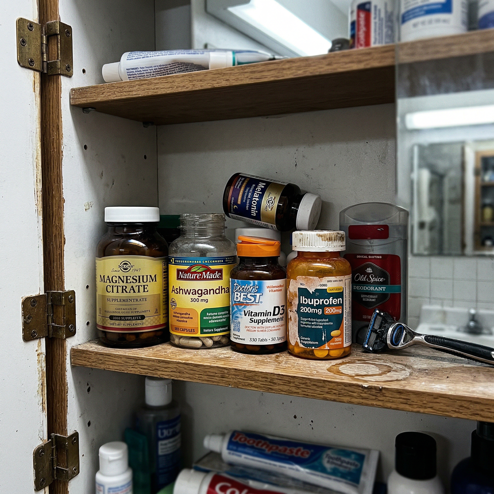
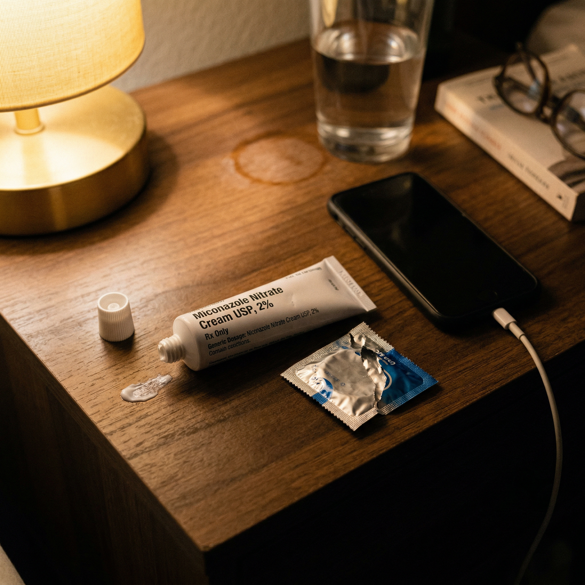
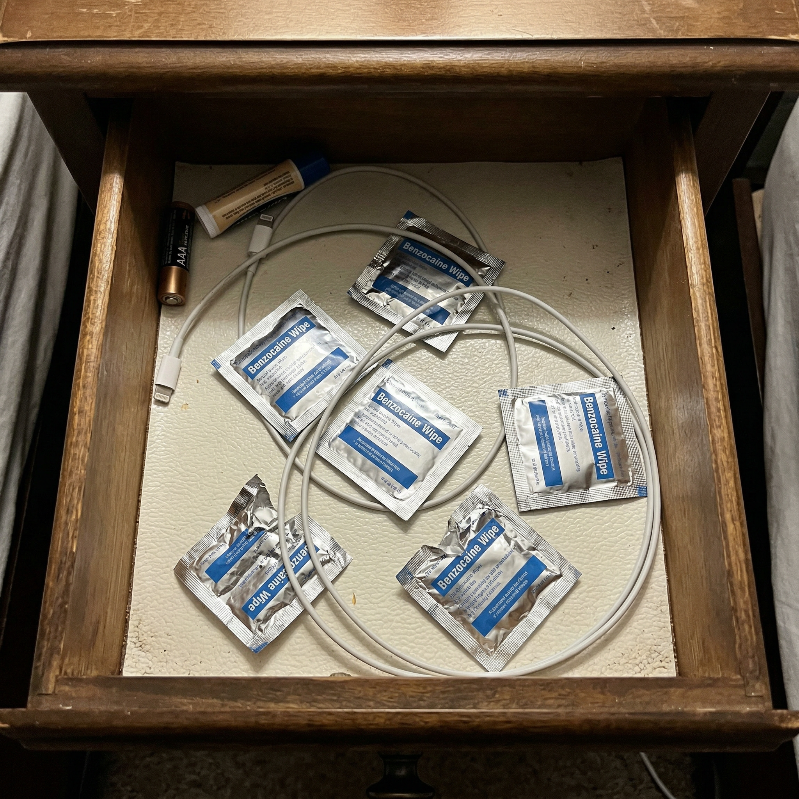
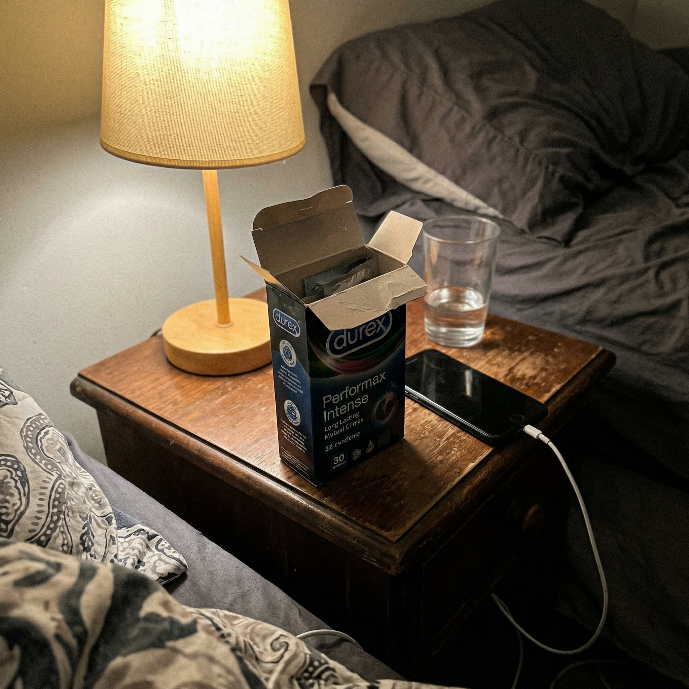

10 belief-violation native image ads for Facebook | Leads to: "How are men who lived for years with premature ejaculation reporting they last 4x longer than before?"
BELIEF VIOLATIONS — Attack: "I just need to learn to control myself — it's a willpower/mental thing"
Draft 1 · Flat Denial (#3)
Evidence: R1
V
ViroCore
✓
Sponsored · 🌐
···
"Just relax" is not a solution for premature ejaculation.
It never was.
That sounds like bad news.
It's actually the best news you've heard in years.
You've been told to breathe deeper.
Think about something else.
Slow down and focus.
You tried all of it.
And nothing changed because relaxation has nothing to do with it.
Ejaculation timing is controlled by a muscle.
Not your mood.
Not your breathing.
Not how stressed you are at work.
A muscle in your pelvic floor — the same one that keeps blood locked in during an erection.
When that muscle is strong, you decide when.
When it's weak, your body decides for you.
Nobody told you about this muscle.
Not your doctor.
Not the articles you read at midnight.
Not the guys who said "just take it slow."
They were all guessing at a mental fix for a physical problem.
You weren't broken.
You were solving the wrong equation.
How are men who lived for years with premature ejaculation reporting they last 4x longer than before: virocorepdp1.lovable.app
See more

🧴
The Delay Spray
Image not found
🎨
Nano Banana 2 Prompt
Raw iPhone photo taken to show a friend. A bathroom counter with a small dark-labeled spray bottle, cap sitting beside it — clearly just used. The bottle is the kind you'd find at a pharmacy — small, clinical-looking, dark plastic with a pump top, about 4 inches tall. It sits next to a ceramic toothbrush holder with two toothbrushes and a soap dispenser. A folded hand towel nearby. The counter has water droplets and a smear of toothpaste near the sink edge. Single overhead bathroom fluorescent making everything slightly flat and harsh.
virocorepdp1.lovable.app
How are men who lived for years with premature ejaculation reporting they last 4x longer than before?
👍 ❤️ 2.8K
Draft 2 · Flip (#5)
Evidence: R4
V
ViroCore
✓
Sponsored · 🌐
···
Viagra makes premature ejaculation worse.
You finish faster with a harder erection.
Nobody warns you about this.
The pill increases blood flow.
More blood means a harder erection.
A harder erection means more sensation.
More sensation means you finish even sooner.
The opposite of what you wanted.
And then there's the rest of it.
You have to plan sex 45 minutes ahead.
You get headaches.
Your face flushes.
And the moment the pill wears off, you're back to where you started.
Because the pill never fixed anything.
It rented you one night at a time.
The real problem isn't blood flow.
It's a muscle that controls when you finish.
That muscle has been weakening.
The pill hid it.
Every month on the pill was a month the muscle got weaker.
You didn't fail.
The pill pointed you in the wrong direction.
How are men who lived for years with premature ejaculation reporting they last 4x longer than before: virocorepdp1.lovable.app
See more

💊
The Lone Pill
Image not found
🎨
Nano Banana 2 Prompt
A blister pack of blue pills on a bathroom counter. One pill punched out (the hole is visible). Three pills remaining. The blister pack sits next to a half-empty glass of water with a fingerprint smudge. Overhead bathroom light. Toothbrush holder and soap dispenser visible. Shot one-handed while standing at the counter.
virocorepdp1.lovable.app
How are men who lived for years with premature ejaculation reporting they last 4x longer than before?
👍 ❤️ 3.1K
Draft 3 · Attack Advice (#9)
Evidence: R1
V
ViroCore
✓
Sponsored · 🌐
···
Your doctor told you it's in your head.
Your doctor is wrong.
It's in a muscle he never mentioned.
That's not his fault.
Medical school barely covers the pelvic floor for men.
Ten minutes in a four-year degree.
So when you sat in his office and described what's happening, he gave you the standard script.
"Reduce stress."
"Try therapy."
"Here's a prescription."
None of those address a muscle.
The muscle sits at the base of your pelvic floor.
It locks blood in during an erection.
It controls the reflex that decides when you finish.
When it's strong, sex works the way it used to.
When it's weak, nothing you think or feel matters.
Your body overrides your brain every time.
That's why relaxation doesn't help.
That's why therapy doesn't help.
That's why the pill only masks it for a few hours.
The problem is physical.
It always was.
Your doctor wasn't lying.
He just wasn't trained to look at the right muscle.
How are men who lived for years with premature ejaculation reporting they last 4x longer than before: virocorepdp1.lovable.app
See more

💊
The Hidden SSRI
Image not found
🎨
Nano Banana 2 Prompt
Raw iPhone photo taken to show a friend. A kitchen counter in the morning — an orange pharmacy prescription pill bottle with a white child-proof cap sitting next to a half-full coffee mug. The bottle's label is deliberately facing AWAY from the camera. Morning light from a kitchen window, slightly overexposed on one side. A kid's cereal bowl with a spoon sticking out is visible at the edge of the frame.
virocorepdp1.lovable.app
How are men who lived for years with premature ejaculation reporting they last 4x longer than before?
👍 ❤️ 2.4K
Draft 4 · Attack Trade-Off (#16)
Evidence: R3
V
ViroCore
✓
Sponsored · 🌐
···
You stopped initiating sex to avoid embarrassment.
You think you're protecting the relationship.
You're ending it.
That sounds harsh.
But this is what actually happens.
It starts with PE.
You lose control.
It happens once, twice, then every time.
So you start avoiding.
"Long day."
"My back hurts."
She stops reaching for you because she thinks you don't want her.
That's stage four.
And it gets worse.
The pattern goes like this.
First the PE.
Then the anxiety before sex even starts.
Then the erections start fading too — because the same weak muscle causes both.
Then the avoidance.
Then the distance.
Every stage is caused by the same thing.
One muscle getting weaker while you treat symptoms instead of the cause.
She's not mad.
She's confused.
She doesn't know it's a muscle problem.
Neither did you.
How are men who lived for years with premature ejaculation reporting they last 4x longer than before: virocorepdp1.lovable.app
See more
🛏️
Her Back
Image not found
🎨
Nano Banana 2 Prompt
Raw iPhone photo. A dark bedroom at night. A woman's bare shoulder and upper back visible, lying on her side facing away from camera. The sheet is pulled up to her shoulder. She's on the far side of the bed. In the foreground, the covers are pushed back messily, pillow indented. Only ambient light — maybe a streetlight through curtains or a hallway light under the door, making everything grey-blue and dim. Very dark, very grainy, phone camera struggling in low light.
virocorepdp1.lovable.app
How are men who lived for years with premature ejaculation reporting they last 4x longer than before?
👍 ❤️ 4.2K
Draft 5 · Quit Proof (#17)
Evidence: R5
V
ViroCore
✓
Sponsored · 🌐
···
You tried Kegels for a week.
Felt nothing.
Quit.
That wasn't failure.
You were squeezing the wrong muscle.
Sounds like an excuse.
It's not.
90% of men who attempt pelvic floor exercises squeeze the wrong area.
They clench their abs.
They tighten their glutes.
They hold their breath and push.
None of that reaches the muscle that controls ejaculation.
That muscle sits deep inside the pelvic floor.
You can't feel it by flexing.
You can't see it working.
And the instructions on every health website are so vague that most men give up after a few days.
Not because the idea is wrong.
The idea is right.
Pelvic floor strength is exactly what controls timing.
But doing Kegels wrong is like doing bicep curls without bending your arm.
The motion looks right.
Nothing happens.
You walked away thinking "this doesn't work for me."
It does.
You just couldn't reach the right muscle.
How are men who lived for years with premature ejaculation reporting they last 4x longer than before: virocorepdp1.lovable.app
See more

⚽
The Phone Timer
Image not found
🎨
Nano Banana 2 Prompt
Raw iPhone photo taken to show a friend. A phone lying on dark rumpled bedsheets, screen showing a stopwatch timer app. The timer display reads 1:47 — one minute and forty-seven seconds. The phone screen is the only light source, casting a blue-white glow on the dark sheets around it. The sheets are clearly slept-in, bunched and wrinkled. No people visible. The room is dark.
virocorepdp1.lovable.app
How are men who lived for years with premature ejaculation reporting they last 4x longer than before?
👍 ❤️ 2.1K
Draft 6 · Real Variable (#21)
Evidence: R1
V
ViroCore
✓
Sponsored · 🌐
···
It was never stress.
It was never age.
It was never "in your head."
It was a muscle you didn't know existed.
You've blamed everything.
The job.
The kids.
Getting older.
You told yourself all of those things because nobody gave you a better answer.
But leading urologists now agree on something most men have never heard.
Premature ejaculation is a muscle problem in the majority of cases.
Not a head problem.
Not a stress problem.
The muscle sits at the base of your pelvic floor.
It controls two things.
It locks blood in during an erection.
And it controls the reflex that decides when you finish.
When it weakens — from sitting, from aging, from years of disuse — both go.
First you lose timing.
Then you lose hardness.
You thought they were separate problems.
They're the same muscle showing up two ways.
Every explanation you gave yourself was wrong.
But so was every explanation your doctor gave you.
The real one was hiding in a muscle nobody mentioned.
How are men who lived for years with premature ejaculation reporting they last 4x longer than before: virocorepdp1.lovable.app
See more

💊
The Nightstand Drawer Graveyard
Image not found
🎨
Nano Banana 2 Prompt
Raw iPhone photo taken to show a friend. An open nightstand drawer viewed from directly above. Inside the drawer: a small dark spray bottle lying on its side (delay spray), two small foil packets (individual benzocaine wipe packets, silver/blue foil), a condom box with darker packaging, a supplement bottle cap (orange/amber, child-proof), and a white phone charger cable tangled through everything. Everything is shoved together without organization.
virocorepdp1.lovable.app
How are men who lived for years with premature ejaculation reporting they last 4x longer than before?
👍 ❤️ 3.6K
Draft 7 · Guilt (#26)
Evidence: R2
V
ViroCore
✓
Sponsored · 🌐
···
30% of men deal with this.
You're not broken.
You're undertrained.
That word stings.
But it's the truth that changes everything.
There's a muscle that controls when you finish.
You didn't know it existed.
You couldn't have trained it if you wanted to.
Nobody told you it was there.
Not your doctor.
Not the articles.
Not the guys who joked about it without admitting they deal with it too.
One in three men.
All dealing with the same thing.
All blaming themselves.
And almost none of them know there's a specific muscle responsible.
When researchers finally tested what happens when men train this muscle, the results lasted five years.
Not five weeks.
Five years.
Because muscles don't forget.
Pills wear off.
Creams wash off.
But a strong muscle stays strong.
You spent years carrying guilt for something that was never your fault.
It was a training gap.
Nothing more.
How are men who lived for years with premature ejaculation reporting they last 4x longer than before: virocorepdp1.lovable.app
See more

🛋️
The Supplement Graveyard
Image not found
🎨
Nano Banana 2 Prompt
Raw iPhone photo taken to show a friend. An open medicine cabinet showing 5-6 different supplement and vitamin bottles — different brands, different sizes, different label colors. One bottle is nearly full with the cap on tight — tried once, stopped. One is about half-empty. One is knocked over on its side in the back. A generic ibuprofen bottle is the most used, cap worn and label peeling. Overhead bathroom fluorescent light making harsh shadows inside the cabinet.
virocorepdp1.lovable.app
How are men who lived for years with premature ejaculation reporting they last 4x longer than before?
👍 ❤️ 3.9K
Draft 8 · Protect (#30)
Evidence: R7
V
ViroCore
✓
Sponsored · 🌐
···
Every morning erection that disappeared was your body trying to show you the muscle was weakening.
You just didn't know the signal.
That's not a metaphor.
Morning erections are the muscle's daily test.
When the pelvic floor is strong, blood stays locked in overnight.
You wake up hard.
When the muscle weakens, blood drains faster than it should.
You stop waking up that way.
Most men assume it's just aging.
It's not.
It's the first signal.
The second signal is losing control of timing during sex.
The third is erections that fade halfway through.
Same muscle.
Same progression.
Your body was warning you the entire time.
Here's what men report when that muscle starts getting stronger again.
Week one — morning erections come back.
Week two to three — noticeable improvement during sex.
Harder.
Longer.
Week four to eight — full control returns.
The timeline isn't random.
It matches how quickly pelvic floor muscles respond to targeted training.
Your body wasn't betraying you.
It was showing you exactly what needed attention.
How are men who lived for years with premature ejaculation reporting they last 4x longer than before: virocorepdp1.lovable.app
See more

👶
The EMLA Tube
Image not found
🎨
Nano Banana 2 Prompt
Raw iPhone photo taken to show a friend. A nightstand surface at night. A white prescription cream tube — medical-looking, clinical text on the label — lying on its side with the cap off. A small smear of white cream visible near the tube's open nozzle. Next to it: a torn foil condom wrapper, ripped open. A phone lies nearby, screen dark, face down. Warm nightstand lamp creating one-sided golden illumination from the left.
virocorepdp1.lovable.app
How are men who lived for years with premature ejaculation reporting they last 4x longer than before?
👍 ❤️ 2.7K
Draft 9 · Identity (#33)
Evidence: R1
V
ViroCore
✓
Sponsored · 🌐
···
You knew "just relax" was garbage advice.
You were right.
It was never psychological.
Part of you always suspected that.
You tried relaxing.
You tried breathing techniques.
You tried not thinking about it.
Nothing changed.
And somewhere in the back of your mind, you thought: this doesn't feel like a mental problem.
You were right.
Leading urologists now point to a specific muscle in the pelvic floor.
It controls the reflex that decides when you finish.
When this muscle is strong, your brain has a say.
When it's weak, your body takes over before you're ready.
No amount of deep breathing changes that.
No amount of therapy rewires a physical reflex.
The advice was wrong because it assumed the problem was in your head.
It was always in a muscle.
And every month you spent trying to "think your way through it" was a month that muscle kept weakening.
You're not the problem.
You never were.
The diagnosis was.
How are men who lived for years with premature ejaculation reporting they last 4x longer than before: virocorepdp1.lovable.app
See more

📱
The Benzocaine Wipes
Image not found
🎨
Nano Banana 2 Prompt
Raw iPhone photo taken to show a friend. An open nightstand drawer viewed from above. Inside: 4-5 small foil-wrapped packets scattered loosely — individual benzocaine wipe packets, each about 2x3 inches, silver and blue foil. Two packets are torn open and crumpled — clearly used. Three are still sealed. A white phone charger cable is tangled through the packets. A tube of lip balm and a single loose AAA battery also in the drawer.
virocorepdp1.lovable.app
How are men who lived for years with premature ejaculation reporting they last 4x longer than before?
👍 ❤️ 3.3K
Draft 10 · Science (#37)
Evidence: R2
V
ViroCore
✓
Sponsored · 🌐
···
32 seconds.
That was the average.
After 12 weeks of training one muscle — 146 seconds.
Same men.
Those numbers come from a clinical study at a university in Rome.
40 men.
All with chronic PE.
All had tried other approaches.
The study didn't use pills.
Didn't use therapy.
Didn't use numbing creams or stop-start techniques.
They trained one muscle in the pelvic floor.
The bulbocavernosus.
It controls two things — blood retention during an erection and the ejaculatory reflex.
When it's weak, both fail.
When it's strong, both work.
Twelve weeks of targeted training.
The average went from 32 seconds to 146 seconds.
That's 4.5 times longer.
82.5% of the men achieved full control.
And the researchers checked back five years later.
The results held.
Because muscles don't forget.
Pills wear off in four hours.
Creams wash off.
Techniques only work when you remember to use them.
A strong muscle works every time.
Without thinking about it.
How are men who lived for years with premature ejaculation reporting they last 4x longer than before: virocorepdp1.lovable.app
See more

📦
The Thick Condom Box
Image not found
🎨
Nano Banana 2 Prompt
Raw iPhone photo taken to show a friend. A nightstand with a condom box — not regular condoms but the extended pleasure or performax variety. The box has darker, more clinical packaging than regular condoms — dark blue or black box. The box top flap is bent back, opened. One or two individual foil packets have been removed. The box sits next to a phone (screen dark) and a half-empty water glass on a wooden nightstand. Warm nightstand lamp light creating one-sided illumination.
virocorepdp1.lovable.app
How are men who lived for years with premature ejaculation reporting they last 4x longer than before?